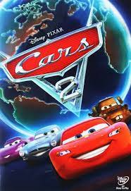

Sobre la pagina Web
Esta pagina fue creada con el fin de dar a conocer un poco mas acerca de esta gran saga llamada cars. Se hizo tomano en cuenta todas las peliculas para asi dar un poco de todos los contenidos al receptor.
Para dar fin a este proyecto de la pagina web sobre cars, abajo se anexara un video con los mejores momentos de la pelicula.
Y recuerda que si quieres ver alguna de las paeliculas de esta saga, actualmente solo estan disponibles en Disney +. Como consejo, ptocura simepre usar paginas legitimas para ver tus peliculas favoritas, asi respetamos el trabajo de los demas y no dañamos a las empresas productoras.
Ya por ultimo una pequeña muestra de lo que fueron las carteleras de las 3 peliculas.
